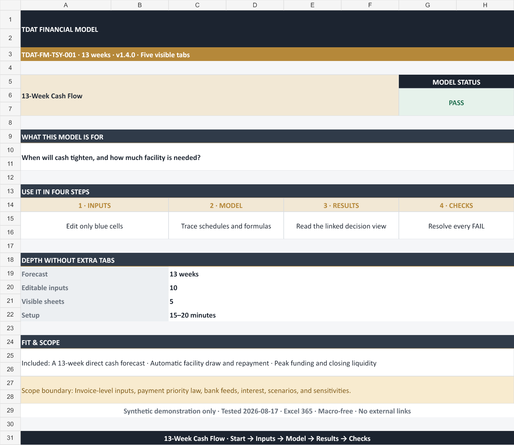
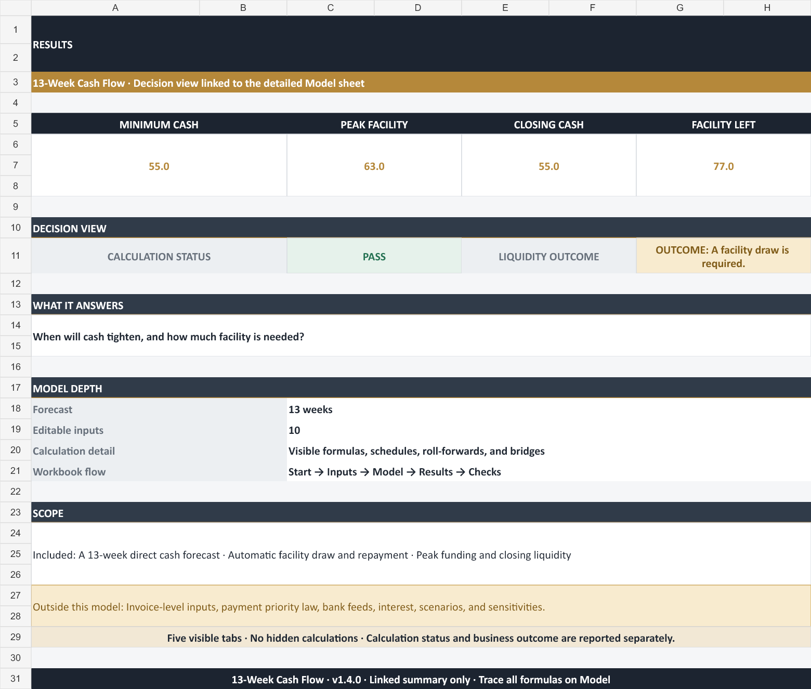
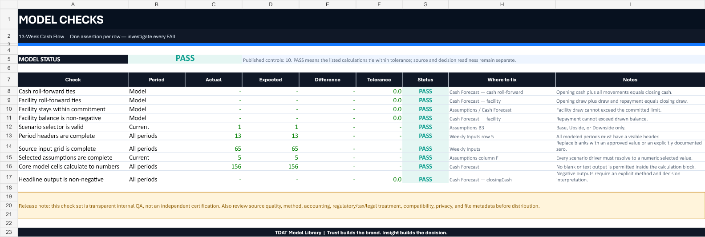

04
Model / Workbook
- Inputs
- Logic
- Controls
Governed synthetic workbook
Model libraryAvailable · TDAT-FM-TSY-001
13-Week Cash Flow
A weekly direct cash forecast with receipts, disbursements, minimum cash, runway, and funding-gap visibility.
Calculation integrity PASS10 / 10 published checksMacro-freeNo external linksSynthetic example

Decision first
When does liquidity tighten, and which payment or funding action comes first?
Confirm scope
Read Cover and Guide; confirm decision, roles, horizon, units, method, and exclusions.
Select a scenario
Choose Base, Upside, or Downside and challenge the visible driver rationale.
Replace blue inputs
Update synthetic source values and assumptions with approved, dated inputs.
Resolve Checks
Trace every FAIL to its source, assumption, schedule, definition, or sensitivity.
Workbook map
Nine visible sheets with a controlled input-to-decision flow.
- Cover: guidance, outputs, control, or release evidence
- Guide: guidance, outputs, control, or release evidence
- Assumptions: guidance, outputs, control, or release evidence
- Weekly Inputs: editable synthetic source inputs
- Cash Forecast: core finance mechanics
- Sensitivity: Receipt realization × Payment factor
- Summary: guidance, outputs, control, or release evidence
- Checks: 10 published controls
- Sources & Version: guidance, outputs, control, or release evidence
What moves the model
Model-specific mechanics stay visible and traceable.
Opening cash
Formula-driven schedule linked to visible inputs and selected scenario assumptions.
Cash receipts
Formula-driven schedule linked to visible inputs and selected scenario assumptions.
Cash disbursements
Formula-driven schedule linked to visible inputs and selected scenario assumptions.
Pre-funding cash
Formula-driven schedule linked to visible inputs and selected scenario assumptions.
Opening facility draw
Formula-driven schedule linked to visible inputs and selected scenario assumptions.
Facility draw
Formula-driven schedule linked to visible inputs and selected scenario assumptions.
Facility repayment
Formula-driven schedule linked to visible inputs and selected scenario assumptions.
Closing facility draw
Formula-driven schedule linked to visible inputs and selected scenario assumptions.
Rendered from the released workbook
The web preview and download are the same build.


QA and release evidence
10 / 10 published checks PASS in the released synthetic case.
Published finance controls
- Cash roll-forward ties: Opening cash plus all movements equals closing cash.
- Facility roll-forward ties: Opening draw plus draw and repayment equals closing draw.
- Facility stays within commitment: Facility draw cannot exceed the committed limit.
- Facility balance is non-negative: Repayment cannot exceed drawn balance.
- Scenario selector is valid: Base, Upside, or Downside only.
- Period headers are complete: All modeled periods must have a visible header.
- Source input grid is complete: Replace blanks with an approved value or an explicitly documented zero.
- Selected assumptions are complete: Every scenario driver must resolve to a numeric selected value.
Distribution controls
- Macro-free .xlsx; no external workbook links or intentional circular references.
- Synthetic values; no real company, customer, employee, vendor, borrower, position, transaction, or household record.
- All 9 user-facing sheets were rendered for clipping and legibility review.
- Calculation integrity and decision readiness are deliberately separate.
SHA-256
EB27DA86F271F642F45A7515635E61C54AA99DC6C34DC433E8DD0DB3C9504579Scope and responsibility
A reusable template is explicit about what it does not decide.
Included
Liquidity, Payment sequencing, Cash runway; synthetic inputs; scenario control; formula-driven engine; sensitivity; summary; sources; and checks.
Deliberately excluded
bank API connection; invoice-level probability engine; legal payment prioritization; lender commitment confirmation.
Usage note
Download, copy, and adapt for learning, interview cases, internal planning, or analysis. Do not resell an unchanged copy as your own product.
Professional responsibility
Validate every source, assumption, formula, method, accounting treatment, tax, legal/regulatory constraint, and suitability before real-world use. Provided without warranty.
Q&A
Questions to answer before using the output.
What should I replace first?
Replace blue cells on Weekly Inputs, then update scenario drivers on Assumptions.
How flexible is the template?
Add periods or source rows in the input layer, extend formulas and formats together, and add a reconciliation check back to Cash Forecast.
What does PASS mean?
All 10 published controls tie within tolerance. It does not validate the user's sources, policy, assumptions, method, or suitability.
Can I use the model with real data?
Yes, in an authorized private copy. Confirm privacy, confidentiality, source ownership, and distribution rules first.
Does it support Google Sheets or LibreOffice?
Not verified. Excel 365 is the supported target; retest formulas, charts, validations, and checks after conversion.
Is the template professional advice?
No. It is an educational analytical template and requires appropriate professional review before real-world use.